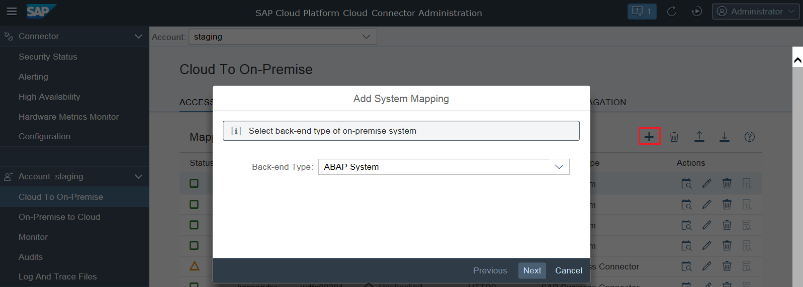
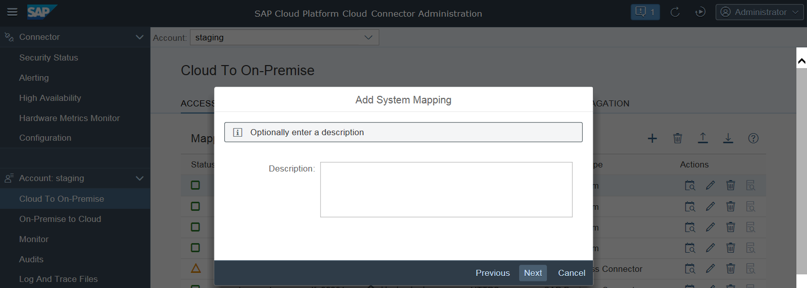
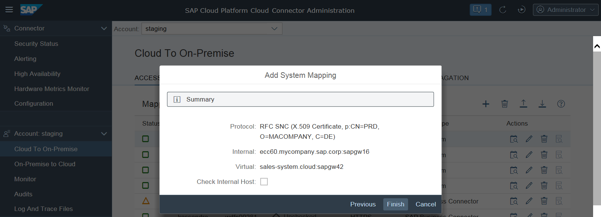

Configuring Access Control (RFC)
Exposing Intranet Systems
To allow your on-demand applications to access a certain back-end system on the intranet, you need to insert an extra line within the Cloud connector Access Control management.
- Choose Clout To On Premise from your Account menu and go to tab Access Control.
- Choose Add.
- Back-end Type: You need to select the description that
best matches the addressed back-end system. In case of RFC, only ABAP
System and SAP Gateway are fitting
values, which means usage of RFC is free of charge.

- Choose Next.
- Protocol: You need to choose whether the Cloud connector
should use RFC or RFC with SNC for connecting to the back-end system. This is
completely independent from the settings on cloud side. This way, you are
ensured that the entire connection from the on-demand application to the actual
back-end system (provided through the SSL tunnel) is secured, partly with SSL
and partly with SNC. For more information, see Initial Configuration (RFC).
Note
- The back end needs to be properly configured to support SNC connections.
- SNC configuration has to be provided in the Cloud connector.
- Choose Next.
- Choose whether you want to configure a load balancing logon or whether to connect to a concrete application server.
- Specify the parameters of the back-end system. It needs to be an existing network address
that can be resolved on the intranet and has network visibility for the Cloud connector. If
this is only possible using a valid SAProuter, specify the router in the respective
field. The Cloud connector
will try to establish a connection to this system, so the address has to be
real.
- When using a load-balancing configuration, the Message Server specifies the message server of the ABAP system. The system ID is a three-char identifier that is also found in the SAP Logon configuration. Alternatively, it's possible to directly specify the message server port in the System ID field.
- When using direct logon, the Application Server
specifies one application server of the ABAP system. The instance number
is a two-digit number that is also found in in the SAP Logon
configuration. Alternatively, it's possible to directly specify the
gateway port in the Instance Number
field.

- Optional: You can virtualize the system information in case you like to hide your internal
host names from the cloud. The virtual information can be a fake name which does
not need to exist. The fields will be pre-populated with the values of the
configuration provided in Message Server and
System ID, or Application
Server and Instance Number.
- Virtual Message Server - specifies the host name exactly as specified as the jco.client.mshost property in the RFC destination configuration in the cloud. The Virtual System ID allows you to distinguish between different entry points of your back-end system that have different sets of access control settings. The value needs to be the same like for the jco.client.r3name property in the RFC destination configuration in the cloud.
- Virtual Application Server - it specifies the host name exactly as specified as the jco.client.ashost property in the RFC destination configuration in the cloud. The Virtual Instance Number allows you to distinguish between different entry points of your back-end system that have different sets of access control settings. The value needs to be the same like for the jco.client.sysnr property in the RFC destination configuration in the cloud.
- This step will only come up, if you have chosen RFC SNC, not for plain RFC. The
<Principal Type> field defines what kind of principal is used
when configuring a destination on the cloud side using this system mapping with
authentication type Principal Propagation. No matter what
you choose, you need to make sure that the general configuration for the
<Principal Type> has been done to make it work correctly. For
destinations using different authentication types, this setting is ignored. In
case you choose None as <Principal Type>, it
is not possible to apply Principal Propagation to this system.Note In the case of RFC, it is not possible to choose between different principal types. The only supported one is X.509 certificate, which can be applied only when using an SNC-enabled back-end connection.
- SNC Partner Name: This step will only come up if you have chosen RFC SNC. The SNC partner name needs to contain the correct SNC identification of the target system.
- You can enter an optional description at this stage. The respective description
will be shown as a rich tooltip when the mouse hovers over the entries of the
virtual host column (table Mapping Virtual to Internal
System).

- The summary shows information about the system to be stored. When saving the system mapping,
you can trigger a ping from the Cloud connector to
the internal host, using the Check availability of internal
host check box. This allows you to make sure the Cloud connector can
indeed access the internal system, and allows you to catch basic things, such as
spelling mistakes or firewall problems between the Cloud connector and
the internal host. If the ping to the internal host is successful, the Cloud connector
saves the mapping without any remark. If it fails, a warning will pop up, that
the host is not reachable. Details for the reason are available in the log
files. You can execute such a check at any time later for all selected systems
in the Access Control overview.

- Optional: You can later edit a system mapping (choose Edit) to make the Cloud connector route the requests for sales-system.cloud:sapgw42 to a different back-end system. This can be useful if the system is currently down and there is a back-up system that can serve these requests in the meantime. However, you cannot edit the virtual name of this system mapping. If you want to use a different fictional host name in your on-demand application, you need to delete the mapping and create a new one. Here, you can also change the Principal Type to None in case you don't want to allow principal propagation to a certain system.
Limiting the Accessible Resources for RFC
In addition to allowing access to a particular host and port, you also need to specify which function modules (Resources) are allowed to be invoked on that host. The Cloud connector uses very strict white lists for its access control, so allowed are only function modules for which you explicitly granted access. All other RFC requests are denied by the Cloud connector.
- To define the permitted function modules (Resources) for a particular back-end system, choose the row corresponding to that back-end system and press Add in section Resources Accessible On... below. A dialog appears, prompting you to enter the specific function module name whose invoking you want to allow.
- The Cloud connector checks that the function module name of an incoming request is exactly as specified in the configuration. If it is not, the request is denied.
- If you select the Prefix option, the Cloud connector allows all incoming requests, for which the function module name begins with the specified string.
- The Enabled checkbox allows you to specify whether that resource should be initially enabled or disabled.